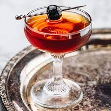

Manhattan

Description
A Manhattan is a luscious, boozy cocktail comprised of bitters, cold water, sweet vermouth, and Rye whiskey. It is stirred, garnished with a luxardo cherry, and served in a coupe
Ingredients
- -- Angostura Bitters
- 1 oz. Sweet Vermouth
- 2 oz. Rye Whiskey
Steps
- Add all Ingredients to a chilled mixing glass
- Place spoon in glass, followed by six or seven 1 inch cubes of ice
- Stir 35-40 times until body reaches optimal temperature and dilution
- Strain into a chilled coupe
- Garnish with a skewered luxardo cherry
- Serve